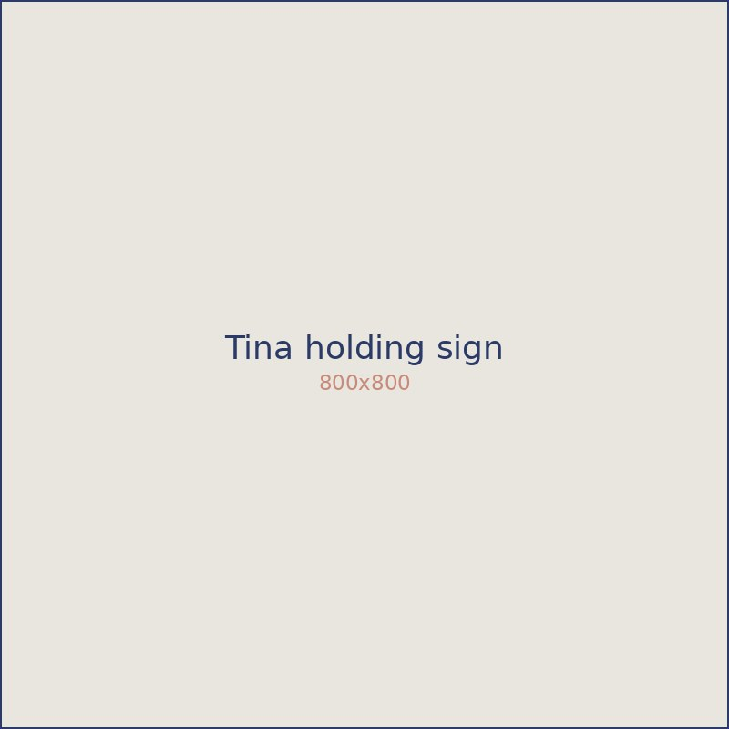
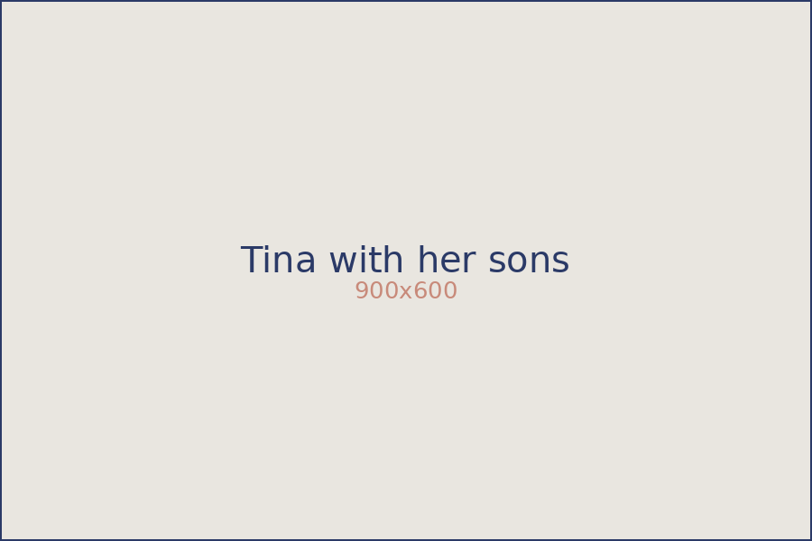

I help widows feel more confident managing money so they can enjoy their Chapter 2. Bet you’re here because you’re struggling with the way you’ve been spending — been there, done that.
When I was 38, my husband Jamie (40) suddenly died from a heart condition we didn’t know he had, leaving me to solo-parent our two boys, Parker (9) and Brady (6).
I was completely shattered. Clueless about who I even was anymore, with no idea how I’d get through it. It was one of the hardest things I’ve ever done. Sound familiar?

Resentment consumed me because of everything I had to carry alone. I felt hopeless that life was never going to get better. The more frustrated I got about my grief, the more I spent — because receiving packages was the only thing that brought a flicker of excitement after losing my husband.
And here’s the kicker: I’d been a personal finance teacher for over 20 years. I struggled to keep a budget and racked up huge credit card bills. Nothing I taught my students was helping me.
It has everything to do with your emotions. My grief shaped how I spent — sad, angry, even happy, it didn’t matter. All I wanted was a new shiny thing to push the feelings away.
I kept hoping I could buy something to fix the pain. But nothing did, and I started fearing I’d feel that way forever. Then something shifted — I found life coaching, and learned the strategies that helped me reduce my overspending by thousands and become more at peace with my grief.
Now I devote my time to helping widows like you do exactly the same. You can have this too.
Work with me →My deepest desire is for every widow to feel confident with her money decisions, so she can build an amazing next chapter. Widows like you can make powerful money decisions — and enjoy life again.

“Tina asks the right (sometimes tough) questions to cut through negative self-talk you don’t even recognize. You’ll feel lighter after your first session.”
Let me show you it’s possible to feel better about your spending and find relief from your grief. Let’s talk.
Schedule a chat →